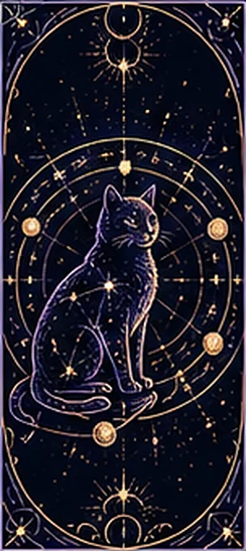
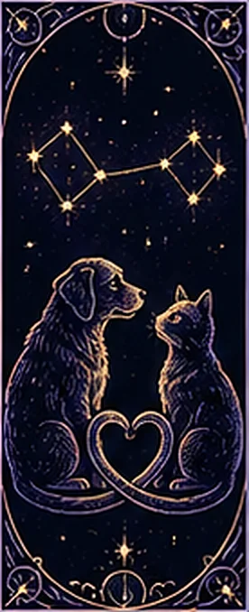
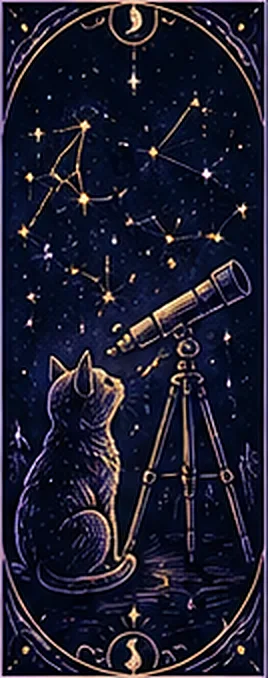
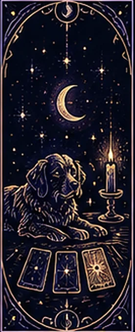
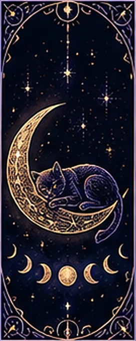
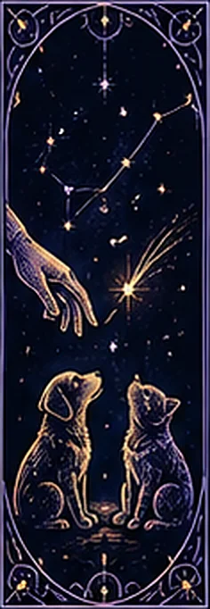
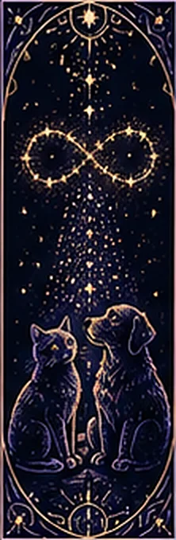
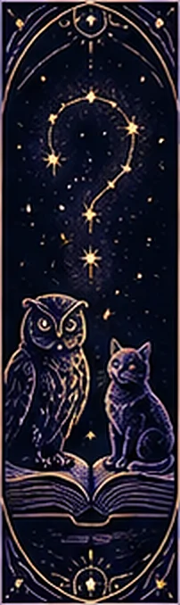
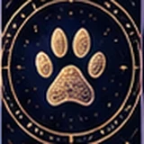
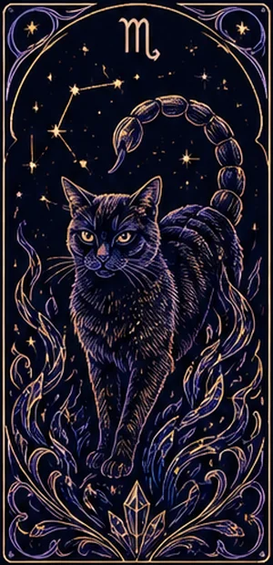

Натальная карта питомца
Натальная карта питомца — это расчёт положения планет в момент рождения кошки или собаки. Бот описывает характер, привычки, сильные стороны и то, чего ждать в поведении.
 Астрология для кошек и собак: натальная карта, знак зодиака и совместимость в Telegram
Астрология для кошек и собак: натальная карта, знак зодиака и совместимость в Telegram
Шесть разборов в Telegram-боте «Душа в душу». Все считаются по дате, времени и месту рождения на Swiss Ephemeris. Первый разбор в каждом разделе бесплатный.

Натальная карта питомца — это расчёт положения планет в момент рождения кошки или собаки. Бот описывает характер, привычки, сильные стороны и то, чего ждать в поведении.

Совместимость считается сравнением натальных карт двух питомцев или питомца и хозяина. Видно, где будет гармония, а где трения, и как их сгладить.

Знак зодиака питомца определяется по дате рождения так же, как у человека. Узнать знак можно бесплатно прямо на этой странице, а подробный портрет — в боте.

Таро для питомца — это расклад на конкретный вопрос о поведении, настроении или здоровье животного. Работает и для хозяина, если питомца пока нет.

Лунный календарь показывает благоприятные дни для груминга, визита к ветеринару, активных игр и отдыха на выбранную дату или месяц.

Если питомца ещё нет, бот по вашей натальной карте подскажет подходящий вид и темперамент. За доплату — кличку и удачный день знакомства.
Оплата звёздами Telegram прямо в боте, без банковских карт. Первый разбор в каждом разделе бесплатный.

Короткие ответы о том, как работает Петология и бот «Душа в душу».
Не нашли ответ — спросите в боте
Петология — сервис астрологии для домашних животных. Он работает через Telegram-бот «Душа в душу»: строит натальную карту питомца, считает совместимость, делает таро-расклады и ведёт лунный календарь.
Знак зодиака питомца определяется по дате рождения так же, как у человека. Введите дату в начале страницы, и знак подсветится на карте.
Дата, время и место рождения. Если точное время неизвестно, карта всё равно строится, но положение домов будет приблизительным.
Да. Бот сравнивает натальные карты двух питомцев любых видов или питомца и хозяина и показывает, где будет гармония, а где возможны трения.
Первый разбор в каждом разделе бесплатный. Дальше от 15 до 25 звёзд Telegram за разбор или безлимит за 199 звёзд в месяц.
Таро в боте отвечает на конкретный вопрос о питомце: о поведении, настроении или здоровье. Это образная подсказка, а не замена ветеринару.
Бот строит натальную карту владельца и бесплатно подсказывает подходящий вид и темперамент питомца.
Да. На выбранную дату или месяц бот показывает удачные дни для груминга, визита к ветеринару, активных игр и отдыха.
Нет. Всё работает внутри Telegram: откройте бота @SoulPetBot и добавьте питомца, это занимает пару минут.
Telegram ID хранится в обезличенном виде и не передаётся третьим лицам. Подробности в политике конфиденциальности.
Откройте бота, добавьте питомца с датой рождения и получите натальную карту прямо в Telegram.
Открыть @SoulPetBot
